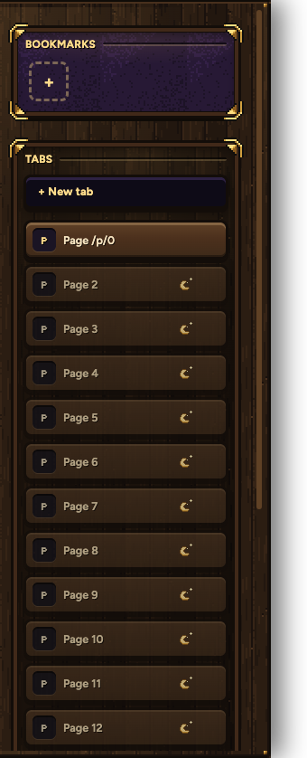
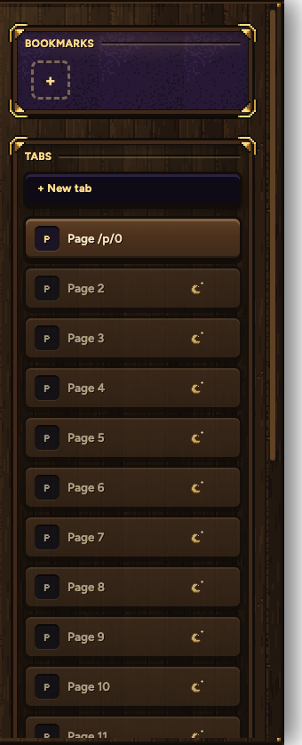
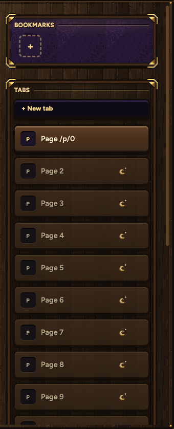

Your pick: three sizes, each machine keeps its own (the small Mac screen can be Small while the PC stays Large). These are the real tab list with 14 tabs, cut to the same height. Large is today's size, the one you asked for on October 21 to read more easily.


